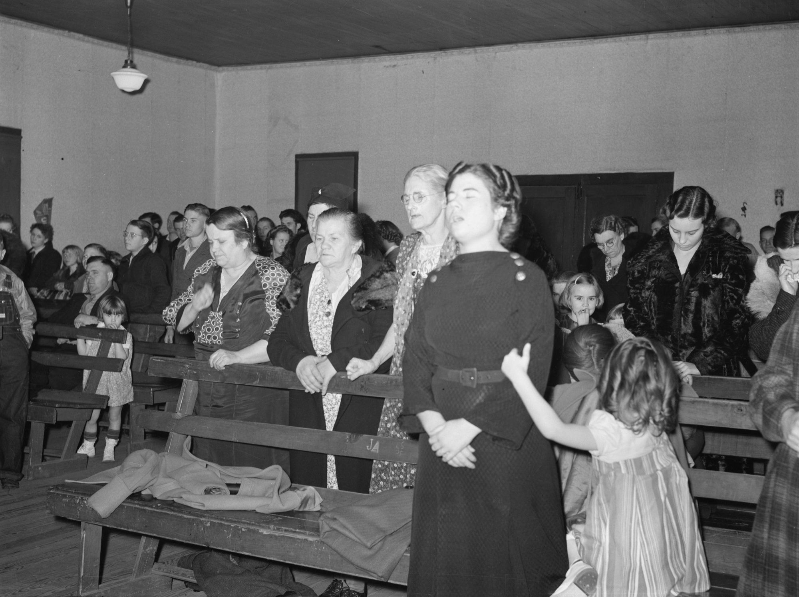
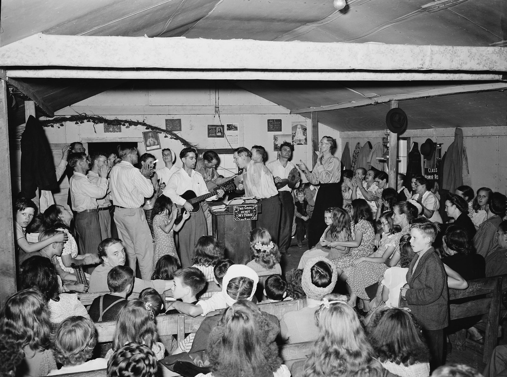

One person locked in, or the whole room?
Some say: I’ll just worship, and whoever wants to can join. If I connect with God, the room will feel it. Others say: everyone has to be locked in, and anyone pulling the room away should be quiet or step out. This page reads both against Scripture and two thousand years of Christians gathering, and lands on grace.
“They all joined together constantly in prayer, along with the women and Mary the mother of Jesus, and with his brothers.”
Acts 1:14. The Greek for “joined together” is homothumadon, one accord.
“How good and pleasant it is when God’s people live together in unity! It is like precious oil poured on the head, running down on the beard.”
Psalm 133:1-2. In the Bible’s unity psalm, unity is poured, not built.
Two ways to walk into a room
The easy part first, then the part that divides churches.
There is a difference between giving God your attention and giving him what is left of it.
Setting time apart, putting the phone in another room, arriving before the first song, coming to be with him and not only near him: none of that is religion trying to earn something. It is what attention to a person looks like. Nobody calls it legalism when you put your phone face down at dinner with someone you love.
There is also a real practice of worship in the middle of everything. A monastery cook in Paris, Brother Lawrence, found God among his pots and pans as surely as on his knees, and The Inner Room tells that story. But Lawrence learned it in hours set apart. The kitchen was where it went next, not where it started. “I’ll worship in the middle of everything, whatever, I’m not really paying attention” is something else. It is not presence carried into work. It is attention never given.
So the first question is settled: set the time apart. The harder question starts when you are not alone.
Already covered on this site. Worship in the middle of work, and the room with the door shut, are The Inner Room’s subject. This page is the other half: the room with the door open and other people in it.
“I’ll just worship.”
I’m going to worship. Whoever wants to join can. If I connect with God, it will change the atmosphere.
It sounds humble, and often it is. It refuses to wait for a room that may never be ready. Its risk is quiet: it can become a show for the people who didn’t join, and a silent expectation that they should have.
“We’re here for him.”
If you’re talking, stop. If you can’t, step out. When everyone is focused together, the glory comes.
It takes God seriously and it takes the room seriously. Its risk is louder: focus becomes the price of getting in, the distracted become the problem, and the glory starts to sound like a reward.
Under both is the question this page tries to answer.
Is one person deeply locked in enough to change a room, or does everyone need to be?
And under that is a second question, which decides how you hear the first. When you focus on God, are you giving him something, or paying him for something?
Both camps at full strength
Each is right about something the other forgets. Each drifts somewhere the other can see. Quotes are their own, from the record.
The first camp has no single founder. It is the instinct of many worship teams and many quiet believers, and its most quoted teacher is Bill Johnson of Bethel Church in Redding, California, who speaks often about carrying God’s presence into a room. The second camp runs through a recognizable line: Kathryn Kuhlman’s healing services around 1970, Benny Hinn, who was shaped by them, and Michael Koulianos, Hinn’s son-in-law, whose Jesus Image ministry in Orlando holds long Sunday-night services built around waiting on the Holy Spirit.
One correction before the comparison. The lock-in camp is often described as telling distracting people to be quiet or leading them out. For Koulianos we found recorded requests, and a firm view of his ushers: they “actually have an authority that’s delegated,” and people who won’t listen to them show “a complete blindness to the Lord and his kingdom.” We found no reported case of anyone being removed. His clearest request to a congregation is about not walking out during communion, with exceptions for children and babysitters. The documented case of people being led out is the Brownsville Revival in Pensacola, where, a 1997 report says, ushers escorted “the overly exuberant” from the sanctuary. The loud, not the distracted.
How these quotes were checked. Koulianos and Kuhlman sermon quotes come from transcripts of the recordings with time marks; the published interviews and articles were read in full. Where a line rests on one person’s memory, the page says so. The research notes are in the claims section below.
Worship and let it spread
Everyone locked in
What you focus on—the kingdom you’re aware of—is what you release into the atmosphere around you.
Bill Johnson, interview in Charisma, August 15, 2016The atmosphere issue is a big deal for me.
Same interviewI think it’s our tendency as a Church to react to the darkness instead of responding to the light. … Invite them into it instead of anxiously trying to pull them out of darkness as if we could, as if we were their saviour.
Steffany Gretzinger, Bethel Music singer, to Cross Rhythms, November 14, 2018. She was speaking about a chaotic world, not about services, but it is the camp’s posture in her words.This isn’t a spanking. It’s a request. … And if an entire room begins thinking about Jesus, amazing things happen.
Michael Koulianos, “Jesus, Our Healer,” a Sunday night service at Jesus Image (2021 or 2022)You come casually, you will not be entrusted with the depths of His glory. … This is not a Christian concert. This is the house of the Living God.
Same service, a minute earlier and a minute laterI am afraid lest I grieve the Holy Spirit, for when the Holy Spirit is lifted from me I am the most ordinary person that ever lived.
Kathryn Kuhlman, Christianity Today, July 20, 1973The fear they share
Read the two camps’ teachers side by side and the same fear shows up in both. Kuhlman, in a recorded sermon: “I fear no man but one fear, lest I grieve the Holy Spirit, lest this anointing shall leave.” Koulianos, decades later: “Once that glory lifts, his glory, I’ve never seen it return. And that, I think, from a ministry standpoint, is my greatest fear.” Johnson’s version is gentler, but it is the same idea: what you carry, you release, so carry it carefully.
It is an honest fear, and it comes from love. It is also the place where both camps can drift from grace, because it quietly assumes the presence of God depends on keeping conditions right, whether those conditions are inside one worshiper or across a whole room.
And the line they share
Inside the lock-in lineage itself the rules were softer than their reputation. Kuhlman said “noise is not the sign of power,” and she insisted, again and again, that she healed no one: “Do not try to reach out and touch Kathryn Kuhlman. Reach up and touch Him” (TIME, 1970). Koulianos retells, with approval, a story of Bill Johnson telling Jenn Johnson she should never have taken her “worship hat” off, even while feeding a baby. The camps are closer than their followers, and closer than they look on paper. Bill Johnson wrote the foreword to Koulianos’s book Holy Spirit (2017) and to the 2021 edition of Kuhlman’s authorized biography. Steffany Gretzinger, a Bethel singer, appears in Jesus Image worship recordings from 2019 to 2025.
Kuhlman’s most famous plea, “Please, don’t grieve the Holy Spirit. … He’s all I’ve got,” rests on one eyewitness, Benny Hinn, writing in 1990 about a service in 1973. Hinn adds that he was told “she had never done anything like that before.” No recording is known.
One accord is a power, not a virtue
Luke uses the word eleven times. Four of them are mobs.
The Greek word is homothumadon. It joins homo, “same,” to thumos, the word for passion or temper. It means moving with one mind, on one impulse. Luke uses it ten times in Acts, and Paul once, in Romans 15:6. The King James translates it “with one accord,” and that is where the phrase comes from.
One surprise first. The most quoted “one accord” of all, “they were all with one accord in one place” on the day of Pentecost (Acts 2:1), is a King James reading of a later Greek text. The older manuscripts say homou, “together”: “they were all together in one place.” Modern translations follow them. The one accord before Pentecost is still there, but it is in Acts 1:14, in the ten days of prayer, and that is in every text.
The second surprise is who has it. Tap through the eleven below.
How this was counted. Every verse of Acts and Romans was searched in the SBL Greek New Testament and in the Elzevir Textus Receptus of 1624, the edition behind the King James. Eleven uses in the first, twelve in the second; the only difference is Acts 2:1.
The eleven
Plus the variantSo the word is real and Luke loves it. The church prays in one accord, meets in one accord, decides in one accord, and the place is shaken (Acts 4:24, 4:31). But the crowd that stoned Stephen also “rushed at him” in one accord (Acts 7:57), and so did the riot in Ephesus (Acts 19:29). Being one is a power. It makes a room strong. What makes a room’s unity holy is the thing it is united around.
The Old Testament has its own words for it, and they say the same thing from three sides.
The singers and trumpeters “joined in unison,” literally were as one, “to make one sound heard.” They sang that God is good and his love endures forever, and the cloud filled the temple. It is the lock-in camp’s strongest text, and it is about one sound aimed at God’s goodness.
The people gathered “as one” to hear the Law, and stood for it from daybreak till noon, “and all the people listened attentively.” Then the Levites walked among them “giving the meaning so that the people understood” (8:8). Attention was served, not demanded.
Our word symphony. “If two of you on earth agree about anything they ask for, it will be done for them.” Then: “where two or three gather in my name, there am I with them.” Agreement matters, and the number Jesus names is small.
What happened in the room
Twenty-five passages, sorted by what actually happened, with what each one can and cannot be made to say.
Put the groups side by side and a pattern shows up that neither camp usually mentions.
Every time someone is put out of a room in the Bible, it is a raising of the dead behind a door: Elisha with the Shunammite’s son, Jesus with Jairus’s daughter, Peter with Dorcas. Jesus kept five people with him; Peter kept no one, and the people he sent out were widows who loved Dorcas, not doubters. The point was quiet for prayer, not a verdict on anyone’s faith.
And every time someone in public worship is told to be quiet, Jesus takes the side of the noise. The crowd shushed Bartimaeus, and Jesus stopped for him. The disciples shooed the children away, and he was indignant. The priests complained about children shouting in the temple, and he quoted a psalm back at them. The most distracted person in the New Testament, Eutychus, fell asleep during Paul’s sermon and out a third-story window. Paul raised him, went back upstairs, broke bread and kept going till daylight (Acts 20:9-11). Nobody scolded him.
Meanwhile, the high points really are rooms that were one: a temple choir making one sound, a church praying as one until the building shook. Both things are true. The question is what made them one.
How the church has actually gathered
Twelve rooms, from a first-century synagogue to Orlando on a Sunday night. For each: how they met, what they did with distraction, and whether they thought everyone had to be in.
The first rule was about people, not attention
The Didache kept out anyone with an unresolved quarrel, not anyone with a wandering mind. Herrnhut’s famous unity began with estranged neighbors embracing on the road to church. Evan Roberts stopped a Merthyr meeting over two people “not at peace with each other.” Azusa’s paper said God could not work where the devil could “sow dissension.” The oldest Christian instinct about a unified room is reconciliation.
Freedom asked for order within months
Azusa Street had no program in 1906, and by January 1907 Seymour was asking for things to be done “decently and in order.” Corinth was the same story in the first century. In both, order was not the enemy of the Spirit. It was how people made room for each other.
Locating the hindrance went badly
When a room was quiet by shared desire, it held. When a leader began to locate “hindrances” in particular people, as Evan Roberts did in 1905, even a sympathetic chronicler called what followed “most unhappy.” The lock-in instinct is safest as an invitation and most dangerous as an accusation.
Is one person enough?
Enough to be heard, yes. Enough to open a door, often. Enough to make God come, no one ever has been.
The Bible answers both halves of the question, and it answers them differently.
One person is enough to be heard.
- Enough to be heard?Yes
Hannah at Shiloh. Her lips moved without sound. The priest thought she was drunk. God heard her. 1 Samuel 1:12-15
The full paragraph
One person is enough to be heard. Hannah prayed so deeply at Shiloh that her lips moved without sound, in a sanctuary run by corrupt priests, and the priest on duty thought she was drunk (1 Samuel 1:12-15). God heard her. The state of the room did not stop him, and the leader’s reading of her was wrong.
- Enough to open a door?Often
David and Saul. David played, and Saul found relief. 1 Samuel 16:23
Paul and Silas. They sang at midnight. Everyone’s chains came loose, not only theirs. Acts 16:25-26
The full paragraph
One person is often enough to open a door. David played and Saul found relief (1 Samuel 16:23). Paul and Silas sang at midnight while “the other prisoners were listening to them,” and when the earthquake came, “everyone’s chains came loose,” not only theirs (Acts 16:25-26). That is the open camp’s best text, and it is a good one.
- Is a room together more?Yes
The temple choir. A whole company made one sound, and the cloud came. 2 Chronicles 5
The church in Acts 4. It prayed as one and was shaken as one. Acts 4
Hebrews. Keep meeting, to spur one another on. You cannot spur yourself. Hebrews 10:24-25
The full paragraph
A room together is more than one person. The cloud in 2 Chronicles 5 came on a whole company making one sound. The room in Acts 4 prayed as one and was shaken as one. Hebrews tells the church not to stop meeting precisely because the people in it are meant to “spur one another on” (Hebrews 10:24-25). You cannot spur yourself.
- Can anyone make God come?No one ever has
The temple choir. The song was about his love, not their focus. 2 Chronicles 5
The church praying for Peter. They told the girl at the door she was out of her mind. He was free anyway. Acts 12:15
The full paragraph
No one makes God come. Not one person, not a whole room. In 2 Chronicles 5 the song was about his love, not their focus. In Acts 12 the church prayed for Peter all night and then told the servant girl who said he was at the door, “You’re out of your mind” (Acts 12:15). God answered a room that did not believe the answer when it knocked.

Part of “the atmosphere” is just people. We catch each other’s emotions from faces and voices in a fraction of a second, and singing together lines up breathing and heart rhythm. Something in the Air and The Thread lay out the research. That does not make a room fake; God made bodies that “rejoice with those who rejoice” (Romans 12:15). It does mean a room can feel full when nothing special is happening, and flat when a great deal is. The feeling is not the measure.
Be heard, and open a door
- Be heard in a bad room (Hannah, 1 Samuel 1:13).
- Open a door others walk through (Acts 16:25-26).
- Stay steady when the room can’t.
- Ask for help to focus, as Elisha did when he called for a harpist (2 Kings 3:15).
Be one, and carry each other
- Make one sound (2 Chronicles 5:13).
- Be shaken together (Acts 4:31).
- Spur one another on (Hebrews 10:24).
- Hold up the arms of the one who is tired (Exodus 17:12).
- Carry the person who can’t get there tonight, the way Abba Poemen let a dozing brother rest his head on his knees.
Make God come
- Earn the glory by being focused enough.
- Tell from the outside who is locked in. Eli got Hannah wrong.
- Decide alone who is “grieving the Spirit.”
- Turn a feeling in the room into proof.
If you want one picture for the whole page, it is Exodus 17. Moses on the hill with his hands raised, and the battle below turning with them. “When Moses’ hands grew tired, they took a stone and put it under him and he sat on it. Aaron and Hur held his hands up, one on one side, one on the other, so that his hands remained steady till sunset” (Exodus 17:12).
The one locked-in person mattered. He could not do it alone. And neither he nor the two who held his arms made the victory: Moses named the altar “The LORD is my Banner” (Exodus 17:15).
Rest is not passivity. Focus is not earning.
Unity is given before it is kept. The effort guards a gift; it doesn’t buy one.
The lock-in camp says: when everyone is focused, the glory comes. Jesus said it the other way around.
On the night before he died he prayed for his followers to be one, and then he said how: “I have given them the glory that you gave me, that they may be one as we are one” (John 17:22). Glory first, then unity. The unity is what the glory produces, not what earns it.
Psalm 133 pictures unity as oil “running down” on Aaron’s beard and dew “falling” on Zion, and it ends, “For there the LORD bestows his blessing.” Both pictures fall from above. Paul says the same thing in a working sentence: “Make every effort to keep the unity of the Spirit through the bond of peace” (Ephesians 4:3). It is the Spirit’s unity. You don’t make it. You keep it, and keeping it takes real effort.
That is the honest middle between the camps. Rest is not passivity. Hebrews says “make every effort to enter that rest” (Hebrews 4:11): the effort is aimed at stopping. Phone away, arriving early, quieting your mind, letting the first song be an arrival and not background. Focus is not earning. You can give God your attention the way you give a friend yours, as a gift, and it is received as one, by a Father who was already in the room before you got there.
I have given them the glory that you gave me, that they may be one as we are one—
Make every effort to keep the unity of the Spirit through the bond of peace.
It sounds like reverence. Underneath, it is a deal. When nothing happens, someone has to be blamed, and it is usually the distracted, the new, or the child.
The same silence and the same raised hands, on a different engine. When nothing is felt, nobody is blamed, because nothing was being bought.
The worshiper as the atmosphere
“If I go deep enough, they’ll follow.”
Worship becomes a demonstration, and the people who didn’t join become an audience that failed. That is the passive-aggressive version: no one is told to change, but everyone is meant to feel it. It quietly puts the worshiper at the center of the room.
The room as a test
“The glory is waiting on you.”
Focus becomes a test, and the leader becomes its examiner. Reverence turns into performance, and the presence of God turns into a reward for a well-behaved room. The Inner Room calls this rut performing intimacy: experience becomes the new proof, and proof is a wage.
The two drifts share one root. Both make the gathering about the state of the worshipers, one about mine, the other about yours, instead of about God and each other. Paul’s test for a gathering is plainer than either: “Everything must be done so that the church may be built up” (1 Corinthians 14:26).
What to do on Sunday
Three places to stand in the same room, and how to set the time apart.
Guard the room, gently
- Say what you’re doing and why, in plain words. Paul’s test is whether an outsider can follow (1 Corinthians 14:23-25).
- Protect the room from mockery, not from mess. Jesus put out the scoffers at Jairus’s house. He stopped for the loud blind man.
- Leave silence long enough to feel awkward. Nobody has to fill it.
- Never tell the room the glory is waiting on them. Tell them who is already here.
- Match the room to the moment. Let the first songs be an open door for people still arriving in their heads. Ask for stillness at the Table and the Word, and say why.
- If someone has to step out, find them afterward, alone and kindly.
Go deep, keep one eye open
- Go as deep as you can. The room needs someone who isn’t waiting on it.
- Don’t measure the room. Eli measured Hannah and got it wrong.
- Be Aaron or Hur for someone. Stand near the person who is struggling and pray for them by name.
- Never use your worship as a message to the people who didn’t join.
Come anyway
- Come. Hebrews says don’t give up meeting together. It doesn’t say meet when you’re ready (Hebrews 10:25).
- Let the room carry you. That is part of what a room is for.
- Ask for a harpist. Elisha did (2 Kings 3:15). A song, a psalm read slowly, a friend beside you.
- If what pulls at you is a child, a phone that has to stay on, or a grief, God is not offended. The girl in the photograph at the top is pulling her mother’s arm, and her mother is still praying.
Go to bed in time. A lot of Sunday distraction starts on Saturday night. If you are going to be with someone, come rested.
Leave it in the car, or turn it face down and set to silent. If you need it for Scripture, use a paper Bible for one month and see what changes.
Come ten minutes early and sit. Let the first song be an arrival, not background music for finding a seat.
When your mind drifts, come back without scolding yourself. Drifting is normal; returning is the practice.
Don’t talk for the first minute after the last song. Benedict asked the same of his monks: when the Work of God ended they went out in silence, so that a brother who stayed to pray alone “is not prevented by another’s misconduct.”
Keep a small room at home. The gathering needs somewhere to land. The Inner Room gives the practice.
Which camp are you in?
Twelve statements. Answer for an ordinary Sunday, not your best one. You get a lean and a drift reading, not a grade.
What gets said, and what the sources say
Things both camps repeat, checked against the Greek and Hebrew, the early texts, and the record. Sorted by how they held up.
- Simplified
“They were all with one accord in one place” on the day of Pentecost.Acts 2:1, King James
That reading follows the later Textus Receptus. The older manuscripts and the SBL Greek text read homou, “together,” and modern translations follow them: “they were all together in one place.” The one accord before Pentecost is in Acts 1:14, in every text.
- Mixed
The glory came because the singers were in unity.2 Chronicles 5:13-14
They did sing “as one” (ke’echad) and the cloud did fill the temple. But the text says then, not because; it was the day the ark entered the house God promised to fill (6:1-2); and the song was about his love. When the glory came, the priests stopped their service.
- Mixed
God inhabits the praises of his people.Psalm 22:3
The King James says “inhabitest the praises of Israel.” The Hebrew can be read “enthroned on the praises of Israel” or, as the NIV has it, “enthroned as the Holy One; you are the one Israel praises.” It is one line with two readings, and the praise is Israel’s, together. A whole theology of praise building a throne is a lot to rest on it.
- Simplified
Jesus put the unbelievers out before he did a miracle.Mark 5:40
He put out a crowd that was laughing at him and kept the parents and three disciples. It was a raising of the dead in a home, not a service. The Greek ekbalōn is strong, “drove out.” No commentary we found applies it to church services; that use is the lock-in camp’s own reading.
- Wrong
Peter cleared the room of unbelief before raising Dorcas.Acts 9:39-40
The people Peter sent out were widows crying over a friend they loved. Nothing in the text says they doubted. He put everyone out and knelt to pray. It was about quiet, not about anyone’s faith.
- Wrong
Grieving the Holy Spirit means being distracted or noisy in a meeting.Ephesians 4:30
In context it sits between “Do not let any unwholesome talk come out of your mouths” and “Get rid of all bitterness, rage and anger … Be kind and compassionate to one another.” Paul is talking about how believers treat each other.
- Simplified
“God is not the author of confusion,” so services should be quiet.1 Corinthians 14:33
The word “author” is the King James’s addition. The Greek says God is not of akatastasia, disorder or unrest, “but of peace.” The same chapter expects “each of you” to bring a hymn, a teaching or a revelation (14:26), one at a time.
- Simplified
The Moravian prayer meeting ran nonstop for a hundred years.Herrnhut, from August 27, 1727
The hourly watch began on August 27, 1727, with twenty-four men and twenty-four women. The 1822 church history that prints the diary never says a hundred years. Hutton’s 1909 history hedges: “It is said to have lasted.” A 2024 Christian History article says it had gaps and was officially discontinued in 1818. Say “for most of a century, in changing form.”
- Wrong
The Moravian Pentecost happened at a Wednesday evening service.August 13, 1727
The diary has the people home “about twelve o’clock”; it was a morning communion. (August 13, 1727 was a Wednesday; Hutton’s 1909 history calls it a Monday, which is also a slip.) The evening before was when the community signed its statutes.
- Simplified
Early Christians sang a hymn to Christ before dawn on Sunday.Pliny, Letters 10.96
Pliny says “a fixed day,” not Sunday. Carmen … dicere can mean recite or sing; an early translation has “a form of prayer.” And Pliny never attended. He relayed what ex-Christians told him, and what two enslaved women said under torture.
- Simplified
Evan Roberts stopped meetings because the Spirit was grieved.Welsh Revival, 1904–05
He did stop meetings over “obstacles” and “disobedience,” and once over “two persons, who were not at peace with each other” (Merthyr, January 29, 1905). A friend who heard him often, David Matthews, remembered the refrain “Do not grieve the Holy Spirit by disobedience” (I Saw the Welsh Revival, 1951). The grieving he meant was disobedience and division, not noise.
- Simplified
Azusa Street had no program at all.Los Angeles, 1906
Frank Bartleman says so, writing in 1925. His famous 1906 line “There was no programme” is about a different mission at Eighth and Maple. And by January 1907 Seymour was asking for things to be done “decently and in order.”
- Unverified
Kathryn Kuhlman told her audience, “Don’t grieve the Holy Spirit. He’s all I’ve got.”Pittsburgh, about 1973
It comes from one eyewitness, Benny Hinn, in Good Morning, Holy Spirit (1990), who adds that he was told “she had never done anything like that before.” No recording is known. Her fear of grieving the Spirit is solid, in her own recorded words and in a 1973 interview.
- Simplified
A Jewish teaching says the Spirit flees when the Shema is said out of step.Shir HaShirim Rabbah 8:13
Rabbi Zeira’s line is short: “When Israel recites Shema in unison, with one voice, with one melody, ‘your voice, let me hear it.’ If not, ‘flee, my beloved.’” The longer version that circulates, with a “focused mind,” God’s court listening, and one person rushing ahead while another lags, is a modern paraphrase, not the midrash text. In the midrash, the Holy Spirit’s own cry of “Flee” is about the nations, not about the Shema.
- Simplified
Ushers led Joni Eareckson Tada out of a Kathryn Kuhlman meeting.Washington, D.C.
They did, with the whole wheelchair section, before the crusade ended, but “so as to not create a traffic jam by the elevator” (Joni and Friends podcast, 2020; also Christianity Today, July 28, 2017). It was crowd management, not discipline.
- Solid
Kathryn Kuhlman said she was not a healer.TIME 1970; Christianity Today 1973
“I have never healed anyone. I am absolutely dependent upon the power of the Holy Spirit.” And at the Shrine Auditorium: “Do not try to reach out and touch Kathryn Kuhlman. Reach up and touch Him.”
- Unverified
At Jesus Image, distracted people are told to be quiet or led out.Orlando
Koulianos asks rooms for attention in recorded sermons, says “if flesh comes around, we’ll just shut it down,” and teaches that his ushers carry “an authority that’s delegated.” We found no report of anyone being removed for distraction. His clearest request is about not walking out during communion, with exceptions.
- Solid
At Brownsville, ushers took people out of the service.Pensacola, 1997 report
Christianity Today, March 3, 1997: “ushers escort the overly exuberant out of the sanctuary.” The people removed were too expressive, not too distracted.
- Simplified
IHOP was modeled on the Moravian prayer watch.Kansas City, 1999
Its own history page names Herrnhut among several precedents, alongside David’s tabernacle and others. It repeats the “more than one hundred years” claim. We found no statement from Mike Bickle calling it his model in those words.
- Simplified
Basil taught that the Spirit in one person passes to everyone in the room.Long Rules Q. 7
He wrote that in community “the working of the Holy Spirit in one man passes over to all the rest at once.” But he was arguing that spiritual gifts are shared in a common life, not that one person’s focus fills a meeting.
- Solid
Bill Johnson teaches that your focus affects the atmosphere around you.Charisma, August 15, 2016
“What you focus on—the kingdom you’re aware of—is what you release into the atmosphere around you.” We did not find a sourced statement from a Bethel Music or Hillsong leader saying “worship changes the atmosphere,” so the page does not put those words in their mouths.
Five places this page takes a side
The other side is given at full strength, because the reader deserves it.
Is it ever right to ask someone to step out?
Ours: Mark 5:40, Mark 10:48-49, 1 Corinthians 14:23-25. Theirs: Leviticus 10:1-3, Acts 5:11, 1 Corinthians 5:13, 1 Corinthians 14:28.
Does unbelief in the room stop God?
Ours: Mark 6:5, Acts 12:15-16. Theirs: Mark 6:5-6, Matthew 17:20, James 1:6-7, Hebrews 11:6.
Does praise make room for God to move?
Ours: Psalm 22:3, 2 Chronicles 5:13, John 17:22. Theirs: 2 Chronicles 20:21-22, Acts 16:25-26, Psalm 22:3 (KJV).
Is “atmosphere” a biblical idea at all?
Ours: 2 Chronicles 5:14, Acts 4:31, 1 Corinthians 14:26. Theirs: 1 Samuel 19:20-24, Acts 5:15, Exodus 34:29, Acts 19:11-12.
Isn’t a meeting with no order more spiritual?
Ours: 1 Corinthians 14:26-33, 40. Theirs: John 3:8, 2 Corinthians 3:17, 1 Thessalonians 5:19.
What this page stands on
Scripture and languages
- English quotations are the NIV (2011), read from YouVersion through this site’s scripture service. Other translations are chosen with the picker.
- Greek: SBL Greek New Testament (2010) and the Elzevir Textus Receptus (1624), searched in full for homothumadon in Acts and Romans. Hebrew: Westminster Leningrad Codex. Greek Old Testament: Septuagint (2 Chronicles 5:13). Read through bolls.life.
- Key words: homothumadon, homou (Acts 2:1), ke’echad (2 Chronicles 5:13), ke’ish echad (Nehemiah 8:1), symphōneō (Matthew 18:19), ekbalōn (Mark 5:40), akatastasia (1 Corinthians 14:33), spoudazontes tērein (Ephesians 4:3), yōshēv tehillōt (Psalm 22:4 Hebrew numbering).
The early church and the monasteries
- Mishnah Berakhot 5:1, 5:3, 5:5, trans. Joshua Kulp (Mishnah Yomit, CC BY), on Sefaria. Shir HaShirim Rabbah 8:13, Rabbi Zeira, trans. Joshua Schreier (The Sefaria Midrash Rabbah, 2022).
- Theodotus inscription, in Adolf Deissmann, Light from the Ancient East, trans. L. R. M. Strachan (1922). Philo, The Special Laws 2.62, trans. C. D. Yonge (1854–55). Josephus, Against Apion 2.17, trans. William Whiston.
- Didache 8, 9, 14, trans. J. B. Lightfoot (1891); also the ANF translation (Roberts and Donaldson).
- Pliny the Younger, Letters 10.96, Latin text and trans. William Melmoth (1796 edition). Justin Martyr, First Apology 65–67, ANF translation.
- E. A. Wallis Budge, The Paradise or Garden of the Holy Fathers, vol. 2 (1907). Palladius, Lausiac History 32, trans. W. K. Lowther Clarke (1918). Basil, Long Rules Q. 7, in The Ascetic Works of Saint Basil, trans. W. K. L. Clarke (1925), pp. 165–166. Abba Poemen in Budge, vol. 2, p. 103, no. 443 (Poemen 92 in Benedicta Ward’s numbering).
- Rule of Benedict, chs. 16, 19, 43, 50, 52, trans. Boniface Verheyen (1949), with the Latin.
Revivals
- The Memorial-Days of the Renewed Church of the Brethren (1822), printing the Herrnhut diary for August 1727. J. E. Hutton, A History of the Moravian Church (1909), pp. 209–211. Jared Burkholder, “Remembering Revival,” Christian History 153 (2024).
- W. T. Stead, “What I Saw in Wales,” in The Welsh Revival: A Narrative of Facts (Pilgrim Press, 1905), pp. 44–62. D. M. Phillips, Evan Roberts: The Great Welsh Revivalist and His Work (1923), ch. 37 on Merthyr. Cardiff Times, February 4, 1905, as reproduced by the Merthyr local historian’s blog daibach-welldigger (the original page could not be reached). David Matthews, I Saw the Welsh Revival (1951), ch. 1. H. Elvet Lewis, With Christ among the Miners (1906), pp. 148–150.
- Frank Bartleman, How Pentecost Came to Los Angeles (1925), pp. 58–60, 70. The Apostolic Faith (Los Angeles), vol. 1, nos. 5 (January 1907, including the unsigned paragraph on unity), 8 and 11.
- “Revival: Pensacola Outpouring Keeps Gushing,” Christianity Today, March 3, 1997. Steve Beard, “The Pensacola Outpouring,” Good News, July/August 1996.
- IHOPKC, “History of 24/7 Prayer” and press releases of October 27, 2023 and February 8, 2024. Christian Post, December 27, 2023. ChurchLeaders, February 5, 2025, on the Firefly investigation.
The two camps today
- Kathryn Kuhlman, “Healing in the Spirit,” Christianity Today, July 20, 1973. “Religion: Miracle Woman,” TIME, September 14, 1970. Recorded sermons “How to Be Filled and Controlled by the Holy Spirit” and “Baptism of the Holy Spirit, Part 2” (dates unknown), and “1974 Jerusalem Conference, Part 1,” transcripts on SermonIndex.
- Joni Eareckson Tada, Joni and Friends podcast, “A Deeper Healing” (July 2020, transcript p. 3); Kelli B. Trujillo, interview, Christianity Today, July 28, 2017. Costi W. Hinn, God, Greed, and the (Prosperity) Gospel (Zondervan, 2019), ch. 1.
- Amy Collier Artman, The Miracle Lady: Kathryn Kuhlman and the Transformation of Charismatic Christianity (Eerdmans, 2019), chs. 2 and 6. Benny Hinn, Good Morning, Holy Spirit (Thomas Nelson, 1990), ch. 1.
- Michael Koulianos, sermons “Jesus, Our Healer” (October 24, 2021 or October 16, 2022), “Into the Cloud,” “His Presence,” “Jesus Is Raising Up Lovers,” “Devotion to Jesus,” Parts 1 and 4 (2023), transcripts on SermonIndex with time marks. Holy Spirit: The One Who Makes Jesus Real (Destiny Image, 2017), foreword by Bill Johnson. Jamie Buckingham, Daughter of Destiny (Bridge-Logos, 2021 edition), foreword by Bill Johnson. Steffany Gretzinger’s recordings at jesusimage.tv, 2019–2025. Quotes are from transcripts of the recordings.
- Bill Johnson, interview by Shawn Akers, Charisma, August 15, 2016. Steffany Gretzinger, interview by Tony Cummings, Cross Rhythms, November 14, 2018.
- Bob Kauflin, “Open the Eyes of My Face, Lord,” Worship Matters, February 4, 2010, and “Manufacturing, Marketing, and Minimizing God’s Presence, Pt. 1,” December 3, 2012.
Photographs
- Arthur Rothstein, Cambria, Illinois, January 1939. FSA/OWI Collection, Library of Congress, LC-DIG-fsa-8b36399. No known restrictions.
- Russell Lee, Lejunior, Kentucky, September 15, 1946. National Archives 541336. Public domain.
- John H. White, Holy Angel Catholic Church, Chicago, October 1973. DOCUMERICA, National Archives 556239. Public domain.
- Davidbena, Gamla synagogue, 2019, CC BY-SA 4.0, cropped and set in grayscale. Bain News Service, “Trappists, Kentucky,” Library of Congress. Paul Wolff, Herrnhut, Deutsche Fotothek, CC0. Y Goleuad supplement, December 2, 1904, National Library of Wales. Azusa Street mission building, photographer unknown, via Wikimedia Commons.